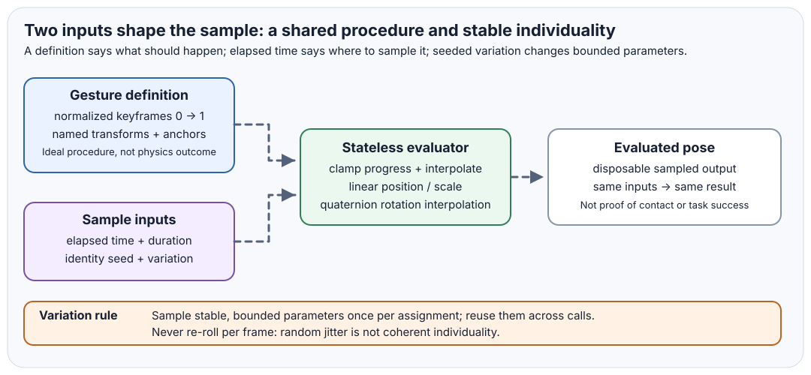
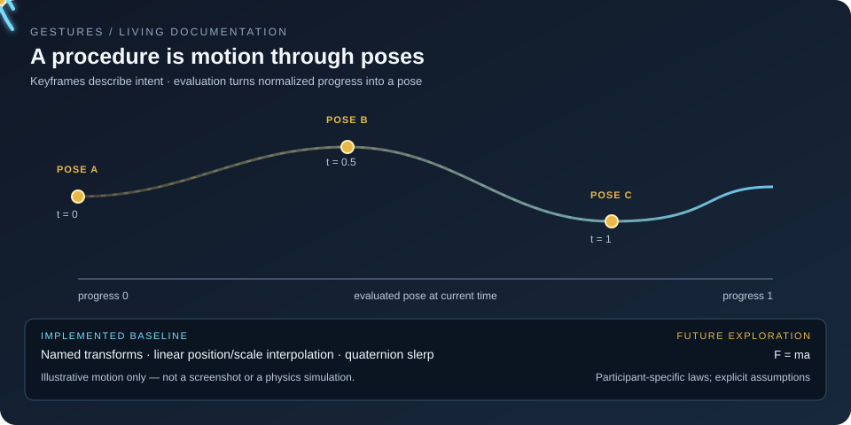
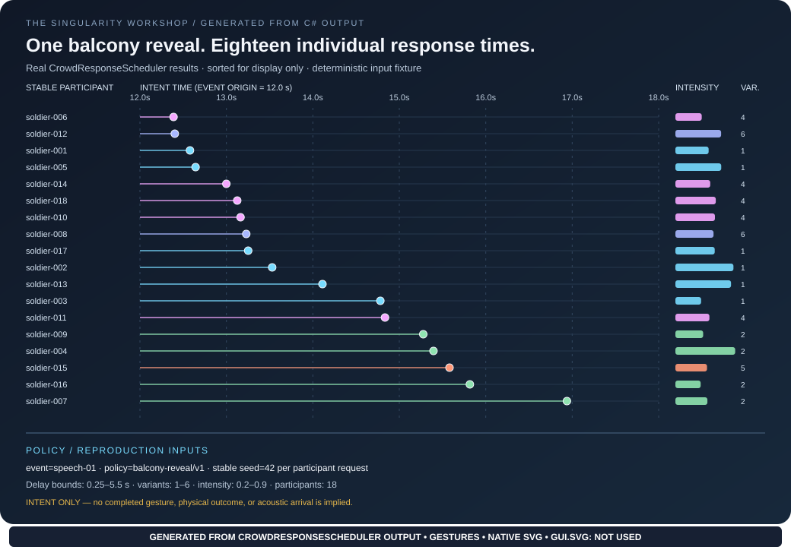

One gesture, many identities
A shared ideal procedure can produce bounded, stable individual differences. Variation should be seeded and coherent—not fresh random noise every frame.

 Development evidence · early alpha
Development evidence · early alpha
Reusable physical procedures, represented as data and evaluated over time. One intended movement can be shared across many actors; identity, skill, and the environment influence the result without requiring a different gesture for every actor or world.
A shared ideal procedure can produce bounded, stable individual differences. Variation should be seeded and coherent—not fresh random noise every frame.

The evaluator answers: what is the desired local posture at this point in the procedure? It does not claim that the world can physically realize every requested pose.

The current crowd-response schedule is generated from the CPU scheduler. It shows scheduled intent, not completed movement, collision resolution, or acoustic arrival.

Walking through ordinary air, a dense gas, or water should not require three separately authored gestures. Gestures supplies the intended posture trajectory; Physics determines how medium density, viscosity, relative flow, buoyancy, contact, and physical constraints affect the realized movement. The environmental comparison is a planned cross-repository experiment, not yet a completed simulation.
The target experiment gives every soldier a stable identity seed, derives bounded offsets around one shared march cycle, and tightens the allowed variation every other completed step. The formation should become more cohesive without becoming a row of identical copies.
We will report agent count, seed, model version, update time, frame-time distribution, allocations, memory, and visual diversity separately. CPU reference and GPU execution will be measured independently. No GPU performance claim is made until those measurements exist.
See the repository for source, tests, benchmarks, and the full documentation.